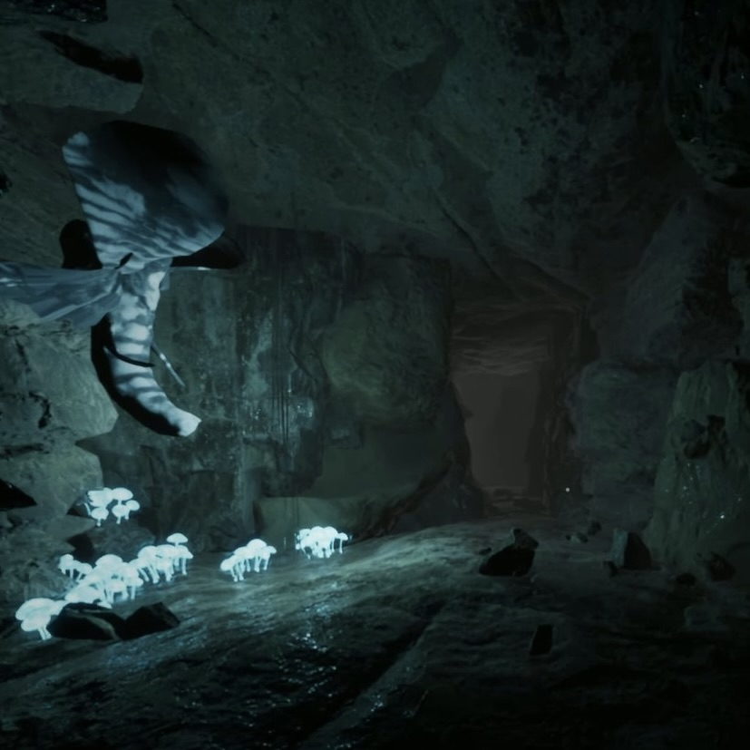

石灰石で満たされた洞窟のような空間。
おそらく無限に広がる双曲空間である。
視界が悪く、敵対生物も多いため極めて危険。
酸を飛ばす体長約2cmの蜘蛛のようなものが無数存在する。
一回の遭遇あたり数百体の個体の対処を強いられるだろう。
この空間には地底湖や液体酸素が湧き出す泉などが存在するが、
空間の危険性故、詳細は不明である。
「出口」や地下道を見つけ脱出することをお勧めする。
理解度:10%
危険度:5/5